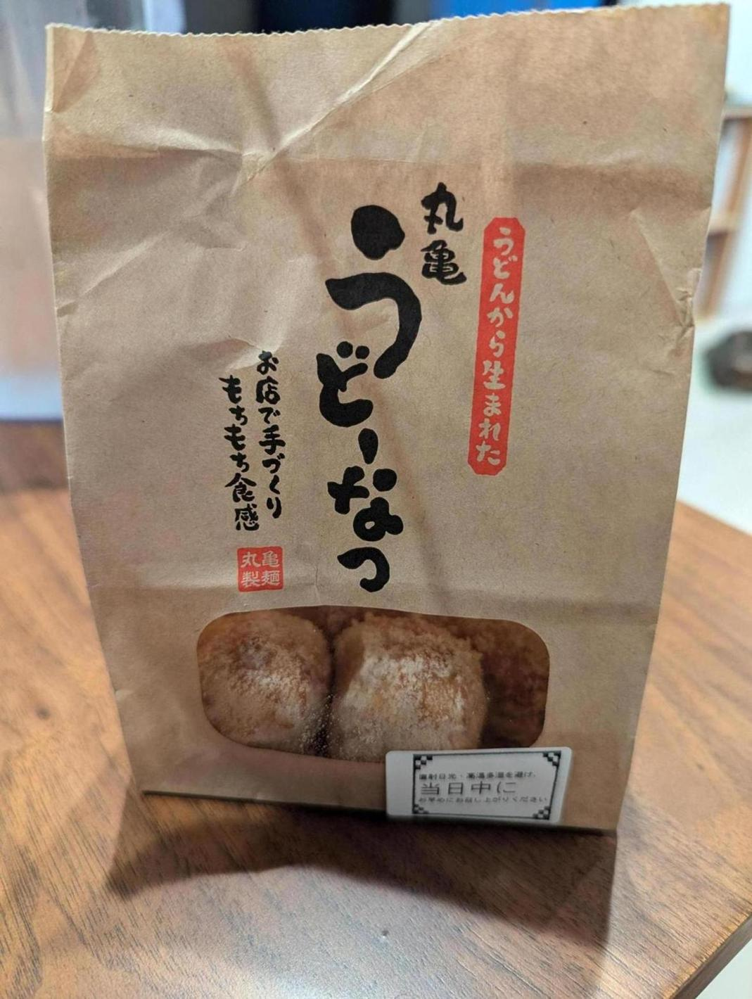

昨日から丸亀製麺で「うどーなつ」というドーナツの販売が始まっているので買ってきた。このために仕事を早く切り上げています。
味はかなり美味い。さすが丸亀製麺だな、という、さすがセブンイレブンだな的な関心をした。きび砂糖かカレースパイスみたいな味付けを選べるのだけど砂糖にした。書いてある量の砂糖をかけるとちょっと多すぎるかも。半分か、なんなら何もかけなくても美味いと思う。
今丸亀製麺の公式サイトを見てて知ったが、丸亀製麺にはMochi-Mochiクラブというファンクラブがあるようだ。
https://mmclub.marugame.com/
MARUGAMEgramというSNS風のページや、掲示板みたいなのもあるようだ。掲示板を見てたら、運営をメンションして店のオペレーションに意見を言っている人がおり、ファンの鑑だなと思った。
MARUGAMEgramは、基本うどんの写真しかないんだけど、たまに普通に飼ってる猫の写真だけを投稿している人もおり、かなり良い空間だった。